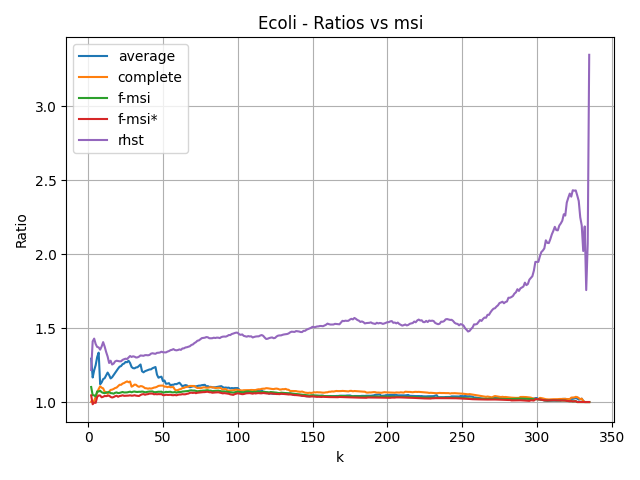
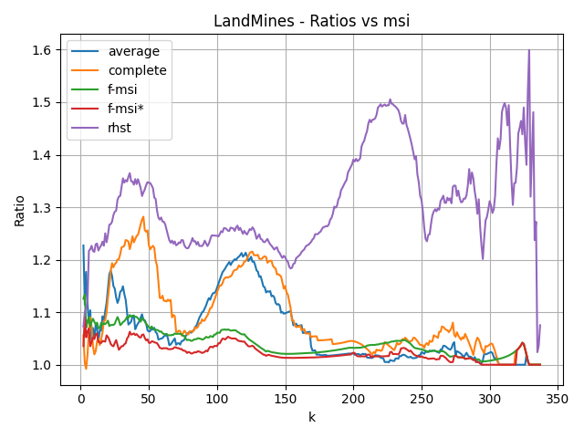
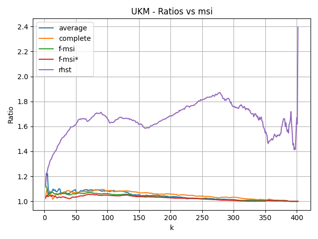
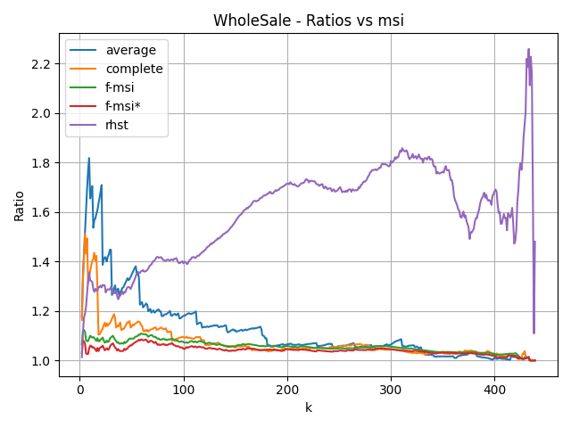
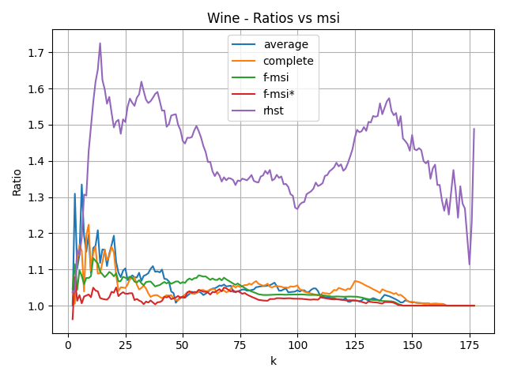

| Base | n | d |
|---|
| wine | 178 | 13 |
| land_mines | 338 | 3 |
| ecoli | 336 | 7 |
| ukm | 403 | 5 |
| wholesale | 440 | 7 |

Ratio between the k-medians cost of each method and that of msi on the Ecoli dataset.

Ratio between the k-medians cost of each method and that of msi on the LandMines dataset.

Ratio between the k-medians cost of each method and that of msi on the UKM dataset.

Ratio between the k-medians cost of each method and that of msi on the WholeSale dataset.

Ratio between the k-medians cost of each method and that of msi on the Wine dataset.